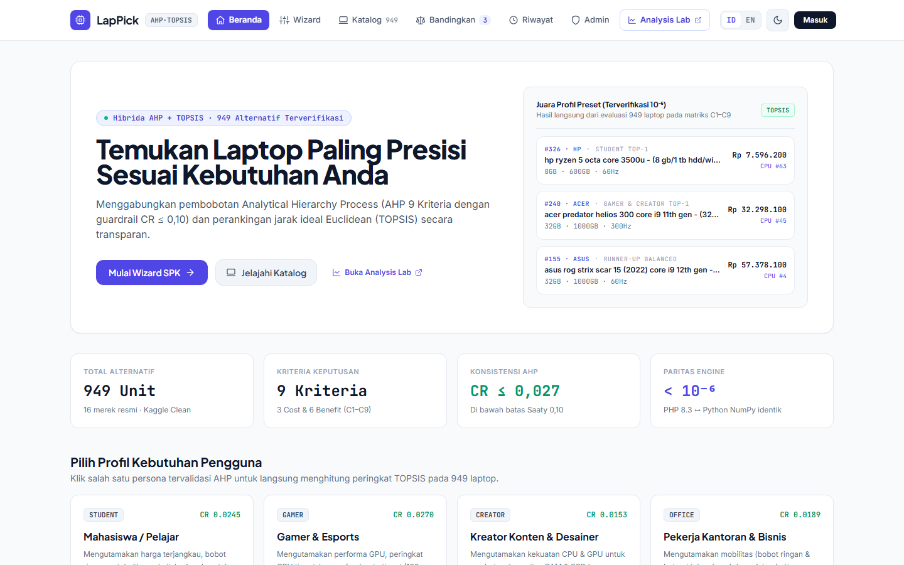
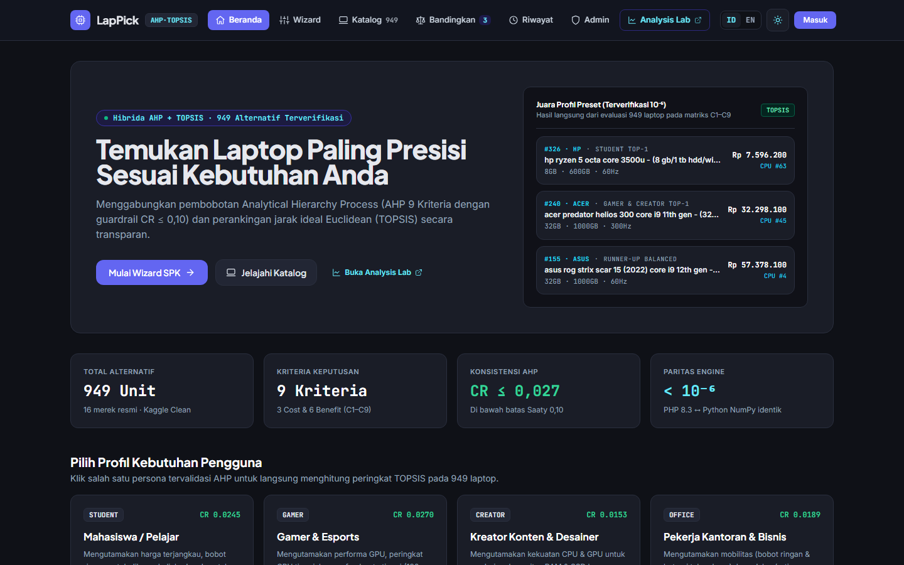
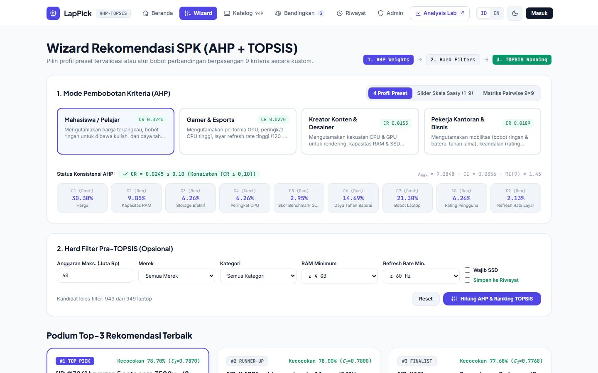
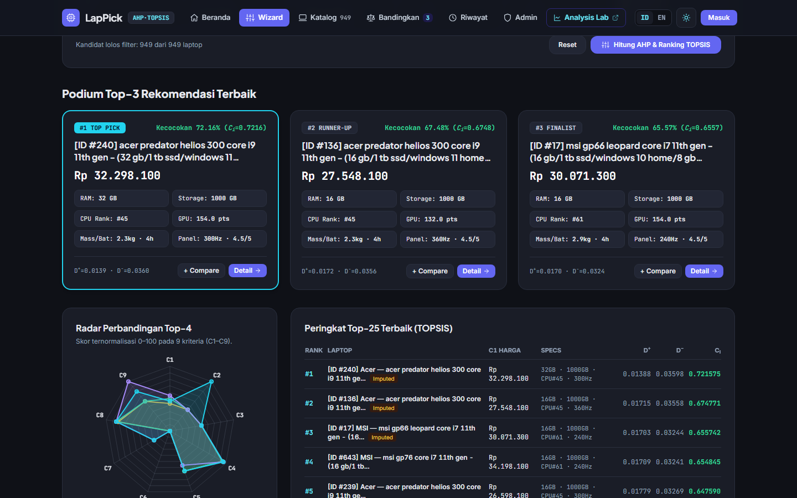
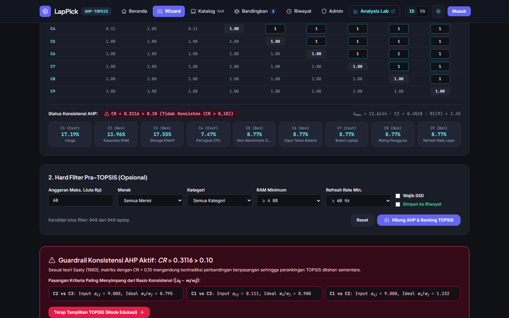
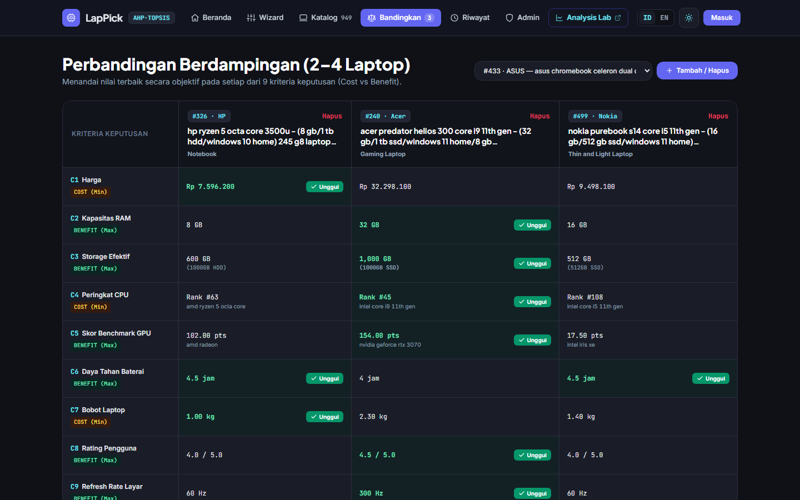
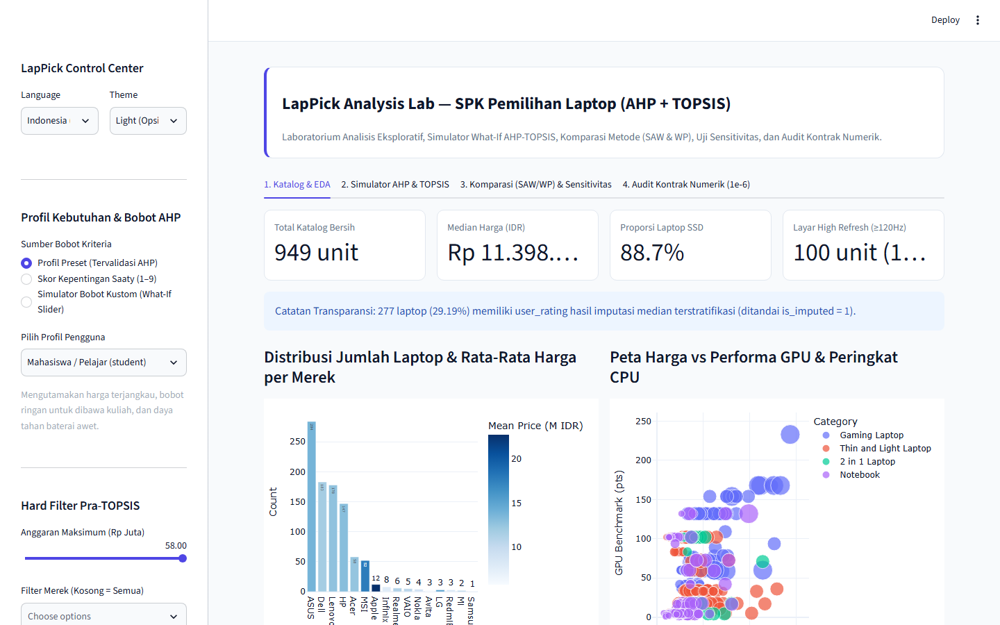

Disusun untuk Memenuhi Tugas Ujian Akhir Semester (UAS)
Mata Kuliah Sistem Pendukung Keputusan Semester VII
بِسْمِ اللَّهِ الرَّحْمَٰنِ الرَّحِيمِ
Assalamu’alaikum Warahmatullahi Wabarakatuh
Alhamdulillah, segala puji dan syukur penulis panjatkan ke hadirat Allah Subhanahu Wa Ta’ala atas limpahan rahmat, taufik, dan hidayah-Nya sehingga penulis dapat menyelesaikan penyusunan laporan proyek Ujian Akhir Semester (UAS) mata kuliah Sistem Pendukung Keputusan yang berjudul “Rancang Bangun Sistem Pendukung Keputusan Pemilihan Laptop Terbaik Sesuai Profil Kebutuhan Pengguna Menggunakan Metode Hibrida AHP dan TOPSIS Berbasis Laravel dan Streamlit (LapPick)”. Selawat beserta salam senantiasa tercurahkan kepada Nabi Muhammad صلى الله عليه وسلم yang telah membawa umat manusia menuju peradaban ilmu pengetahuan.
Laporan ini disusun secara live seiring pengembangan perangkat lunak dan eksperimen komputasi pada Google Colab, yang mencakup tahapan pembersihan data (data cleaning), rekayasa fitur (feature engineering), penyusunan bobot prioritas kriteria menggunakan Analytical Hierarchy Process (AHP), perankingan alternatif menggunakan Technique for Order of Preference by Similarity to Ideal Solution (TOPSIS), serta validasi komparatif terhadap metode Simple Additive Weighting (SAW) dan Weighted Product (WP).
Penulis menyadari bahwa laporan ini masih memiliki ruang penyempurnaan. Oleh karena itu, kritik dan saran yang membangun sangat diharapkan demi pengembangan sistem yang lebih baik di masa mendatang. Semoga laporan dan perangkat lunak yang dihasilkan dapat memberikan manfaat akademis maupun praktis.
Wassalamu’alaikum Warahmatullahi Wabarakatuh
Pekanbaru, November 2026
Penulis,
Ahmad Fadli Pratama
NIM. 12350111030
Perkembangan industri perangkat komputasi bergerak (laptop) menghadirkan ratusan varian produk di pasar dengan kombinasi spesifikasi teknis yang sangat beragam, mulai dari arsitektur prosesor (CPU), pengolah grafis (GPU), kapasitas dan tipe memori (RAM), teknologi penyimpanan (SSD/HDD), frekuensi pembaruan layar (refresh rate), daya tahan baterai, bobot fisik, hingga harga jual. Keberagaman ini memicu fenomena choice overload (kelebihan pilihan) bagi konsumen. Ketika seorang calon pembeli dihadapkan pada hampir seribu alternatif perangkat secara bersamaan, pengambilan keputusan secara intuitif sering kali berakhir pada pilihan yang kurang optimal karena terpengaruh oleh promosi pemasaran atau sekadar melihat satu atribut tunggal seperti kapasitas RAM tanpa menimbang kinerja prosesor dan kartu grafis secara proporsional.
Permasalahan pemilihan laptop pada hakikatnya merupakan persoalan pengambilan keputusan multikriteria (Multi-Criteria Decision Making / MCDM) yang melibatkan pertukaran (trade-off) antara kriteria keuntungan (benefit criteria) dan kriteria biaya (cost criteria). Selain itu, setiap segmen pengguna memiliki struktur preferensi yang berbeda secara fundamental. Seorang mahasiswa umumnya memprioritaskan keterjangkauan harga, bobot yang ringan untuk mobilitas kampus, dan daya tahan baterai. Sebaliknya, seorang pemain gim kompetitif (gamer) menuntut performa benchmark GPU yang tinggi, prosesor kelas atas, dan layar berkecepatan 144 Hz hingga 360 Hz meskipun harus mengorbankan bobot perangkat dan harga. Demikian pula kreator konten membutuhkan keseimbangan antara kekuatan komputasi CPU/GPU dan kapasitas penyimpanan SSD, sementara pekerja kantoran mengutamakan portabilitas ultra-ringan dan keandalan perangkat.
Untuk mengatasi subjektivitas dalam penentuan bobot kepentingan antar-kriteria sekaligus menghasilkan urutan rekomendasi yang rasional dari ratusan alternatif produk, pendekatan hibrida yang menggabungkan metode Analytical Hierarchy Process (AHP) dan Technique for Order of Preference by Similarity to Ideal Solution (TOPSIS) menjadi solusi yang sangat tepat. Metode AHP yang dikembangkan oleh Thomas L. Saaty memiliki keunggulan matematis dalam menurunkan bobot prioritas kriteria melalui matriks perbandingan berpasangan berskala 1–9 disertai mekanisme pengendalian mutu logika melalui Consistency Ratio (CR ≤ 0,10). Selanjutnya, bobot yang telah teruji konsistensinya tersebut diumpankan ke dalam algoritma TOPSIS untuk mengukur jarak geometris (Euclidean distance) setiap alternatif laptop terhadap solusi ideal positif (A+) dan solusi ideal negatif (A-).
Berdasarkan urgensi tersebut, proyek Ujian Akhir Semester (UAS) ini membangun LapPick, sebuah Sistem Pendukung Keputusan pemilihan laptop berbasis arsitektur ganda yang memadukan aplikasi web utama menggunakan kerangka kerja Laravel (untuk manajemen katalog, autentikasi multi-pengguna, kuesioner perbandingan berpasangan AHP, dan pelaporan rekomendasi TOPSIS) serta modul laboratorium analitik menggunakan Streamlit (untuk eksplorasi data interaktif, simulasi sensitivitas bobot secara real-time, dan validasi silang terhadap metode SAW serta WP). Seluruh data katalog diproses melalui alur kerja terstandar pada Google Colab menggunakan dataset publik Kaggle Laptop Ranked Specifications yang mencakup 949 unit laptop terverifikasi dengan 9 kriteria keputusan.
Berdasarkan latar belakang masalah yang telah diuraikan, rumusan masalah dalam proyek penelitian ini adalah sebagai berikut:
Agar pembahasan dan pengembangan sistem tetap terfokus pada tujuan akademis mata kuliah Sistem Pendukung Keputusan, ditetapkan batasan-batasan masalah sebagai berikut:
Tujuan yang ingin dicapai dari pelaksanaan proyek ini meliputi:
laptops_clean.csv) berjumlah 949 baris yang bebas dari duplikasi, nilai kosong, dan galat pemotongan digit melalui pipeline Google Colab yang dapat direproduksi ulang.Sistem Pendukung Keputusan (Decision Support System / DSS) merupakan sistem informasi interaktif berbasis komputer yang dirancang untuk membantu pengambil keputusan dalam memanfaatkan data dan model matematis guna menyelesaikan masalah semi-terstruktur maupun tidak terstruktur (Turban dkk., 2011). Dalam taksonomi sistem pendukung keputusan modern, permasalahan pemilihan produk dari sekumpulan alternatif diskrit dengan banyak atribut yang saling bertentangan dikategorikan ke dalam Multiple Attribute Decision Making (MADM), yang merupakan bagian dari keluarga Multi-Criteria Decision Making (MCDM).
Secara formal, persoalan MADM direpresentasikan ke dalam matriks keputusan X berukuran m × n, di mana A1, A2, …, Am melambangkan himpunan alternatif yang dievaluasi (dalam penelitian ini m = 949 laptop), sedangkan C1, C2, …, Cn melambangkan himpunan kriteria keputusan (n = 9 kriteria), dan elemen xij menyatakan nilai kinerja alternatif ke-i terhadap kriteria ke-j. Setiap kriteria diklasifikasikan ke dalam dua sifat, yaitu:
Analytical Hierarchy Process (AHP) yang diperkenalkan oleh Saaty (1980) adalah metode pengukuran melalui perbandingan berpasangan (pairwise comparison) yang mengandalkan penilaian pakar atau preferensi pengguna untuk menurunkan skala prioritas (bobot) dari sekumpulan kriteria. Pada matriks perbandingan berpasangan A berukuran n × n, elemen aij menyatakan tingkat kepentingan relatif kriteria ke-i dibandingkan kriteria ke-j berdasarkan skala fundamental 1 sampai 9 sebagaimana dirinci pada Tabel 2.1. Matriks ini bersifat resiprokal positif sehingga memenuhi sifat aii = 1 dan aji = 1 / aij.
| Intensitas | Definisi Verbal | Penjelasan |
|---|---|---|
| 1 | Sama penting (Equal Importance) | Kedua kriteria berkontribusi sama besar terhadap tujuan keputusan. |
| 3 | Sedikit lebih penting (Moderate Importance) | Pengalaman dan penilaian sedikit memihak satu kriteria dibanding kriteria pasangannya. |
| 5 | Lebih penting (Strong Importance) | Satu kriteria secara kuat lebih diutamakan dibanding kriteria pasangannya. |
| 7 | Sangat lebih penting (Very Strong Importance) | Satu kriteria sangat dominan dan keunggulannya tampak nyata dalam praktik. |
| 9 | Mutlak lebih penting (Extreme Importance) | Bukti yang mendukung satu kriteria atas kriteria lain berada pada tingkat kepastian tertinggi. |
| 2, 4, 6, 8 | Nilai tengah (Intermediate Values) | Digunakan apabila diperlukan kompromi di antara dua penilaian yang berdekatan. |
Langkah-langkah komputasi vektor bobot prioritas w = [w1, w2, …, wn]T dan uji rasio konsistensi pada metode AHP adalah sebagai berikut:
Apabila nilai Consistency Ratio memenuhi syarat CR ≤ 0,10 (10%), maka penilaian perbandingan berpasangan dinyatakan konsisten secara logis dan bobot wj sah digunakan pada tahap TOPSIS. Nilai Random Index (RI) Saaty untuk matriks berordo n = 1 hingga 10 ditunjukkan pada Tabel 2.2 (untuk n = 9 kriteria, nilai RI = 1,45).
| Ordo Matriks (n) | 1 | 2 | 3 | 4 | 5 | 6 | 7 | 8 | 9 | 10 |
|---|---|---|---|---|---|---|---|---|---|---|
| Nilai RI | 0,00 | 0,00 | 0,58 | 0,90 | 1,12 | 1,24 | 1,32 | 1,41 | 1,45 | 1,49 |
Metode TOPSIS yang dirumuskan oleh Hwang dan Yoon (1981) didasarkan pada prinsip bahwa alternatif terpilih yang terbaik tidak hanya memiliki jarak terpendek dari solusi ideal positif (A+), tetapi juga memiliki jarak terjauh dari solusi ideal negatif (A-). Tahapan perhitungan TOPSIS terdiri atas lima langkah berurutan:
Sebagai instrumen verifikasi objektif pada laboratorium analitik Streamlit, hasil perankingan TOPSIS dibandingkan terhadap dua metode MADM klasik lainnya menggunakan bobot AHP yang sama:
Tabel 2.3 merangkum beberapa penelitian terdahulu yang relevan dengan penerapan metode AHP, TOPSIS, SAW, dan WP dalam sistem pendukung keputusan pemilihan perangkat laptop.
| No | Peneliti & Tahun | Metode & Kriteria | Temuan Utama & Celah terhadap LapPick |
|---|---|---|---|
| 1 | Pratama & Setiawan (2022) | AHP + TOPSIS (5 kriteria: Harga, RAM, Storage, CPU, Layar) | Berhasil menerapkan AHP-TOPSIS pada 30 sampel laptop lokal, namun belum menyertakan skor benchmark GPU/CPU kuantitatif dan belum menguji sensitivitas bobot. |
| 2 | Kurniawan dkk. (2023) | SAW vs TOPSIS (6 kriteria spesifikasi laptop) | Menunjukkan bahwa TOPSIS memberikan pemisahan skor yang lebih tegas dibanding SAW ketika terdapat alternatif dengan harga ekstrem, namun bobot masih ditentukan secara subjektif tanpa uji CR AHP. |
| 3 | Wijaya & Lestari (2024) | AHP + WP (Pemilihan Laptop Mahasiswa) | Fokus hanya pada satu segmen (mahasiswa) dengan 50 data katalog statis dan belum menyediakan analisis komparasi lintas metode maupun antarmuka multi-profil. |
| 4 | Proyek LapPick (2026) | Hibrida AHP + TOPSIS + Validasi SAW/WP (9 Kriteria, 949 Laptop) | Menggunakan 949 data laptop terverifikasi dengan benchmark CPU/GPU riil, mendukung 4 profil prasetel + mode kustom ber-guardrail CR ≤ 0,10, serta mengintegrasikan Laravel dan Streamlit Analysis Lab. |
Metodologi pelaksanaan proyek UAS ini dirancang ke dalam enam tahapan sistematis yang saling berkesinambungan:
laptops_clean.csv.topsis_fixture.json).AhpService, TopsisService, antarmuka Wizard 3 langkah dwibahasa (ID/EN) dengan Light/Dark Mode, fitur perbandingan berdampingan (Compare), dan riwayat keputusan.Dataset yang digunakan dalam penelitian ini diambil dari repositori publik Kaggle dengan judul Laptop Ranked Specifications (2022) yang disusun oleh Dhanush Bommavaram (https://www.kaggle.com/datasets/dhanushbommavaram/laptop-ranked-dataset, lisensi CC BY-SA 4.0). Dataset ini dipilih karena memiliki kelengkapan atribut yang jarang dimiliki dataset laptop lain, yaitu keberadaan skor benchmark GPU (dari UserBenchmark), peringkat CPU, daya tahan baterai (jam), rating pengguna riil, serta refresh rate layar (Hz). Tabel 3.1 menyajikan definisi kesembilan kriteria yang digunakan dalam model keputusan LapPick.
| Kode | Nama Kriteria | Sifat | Satuan | Kolom Dataset Bersih | Keterangan & Transformasi |
|---|---|---|---|---|---|
| C1 | Harga Laptop (Price) | Cost | Rp | price_idr |
Konversi Price (in INR) × 190. Semakin murah semakin baik. |
| C2 | Kapasitas RAM | Benefit | GB | ram_gb |
Kapasitas memori utama (4 GB s.d. 32 GB). |
| C3 | Storage Efektif | Benefit | GB | storage_effective_gb |
Kapasitas penyimpanan dikalikan faktor kecepatan (SSD × 1,0; Non-SSD × 0,6). |
| C4 | Peringkat CPU | Cost | Peringkat | cpu_ranking |
Nomor peringkat prosesor (1 = tertinggi). Semakin kecil angkanya semakin baik. |
| C5 | Skor Benchmark GPU | Benefit | Poin | gpu_benchmark |
Skor kinerja kartu grafis (1,0 s.d. 233,0). Semakin besar semakin baik. |
| C6 | Daya Tahan Baterai | Benefit | Jam | battery_hours |
Estimasi ketahanan baterai (4,0 s.d. 5,0 jam). |
| C7 | Bobot Fisik | Cost | kg | weight_kg |
Berat laptop dalam kilogram (0,78 s.d. 2,90 kg). Semakin ringan semakin baik. |
| C8 | Rating Pengguna | Benefit | Skala 1–5 | user_rating |
Penilaian ulasan pembeli pada marketplace (1,8 s.d. 5,0). |
| C9 | Refresh Rate Layar | Benefit | Hz | refresh_rate_hz |
Frekuensi layar (60 Hz, 90 Hz, 120 Hz, 144 Hz, 165 Hz, 240 Hz, 300 Hz, 360 Hz). |
Pada dataset mentah, sejumlah kolom kategorikal disimpan dalam bentuk kode angka (tokenisasi), serta terdapat potensi duplikasi baris, nilai kosong pada atribut ulasan pengguna, dan ketidakwajaran ekstraksi angka pada kolom Refresh Rate. Oleh karena itu, dirancang pipeline pembersihan data otomatis di dalam notebook 01_data_cleaning_feature_eng.ipynb yang mencakup lima langkah:
company (1=ASUS, 2=HP, 3=Lenovo, ..., 16=VAIO), Type (1=Gaming Laptop, 2=Thin and Light Laptop, ..., 9=Creator Laptop), Processor Brand, dan Operating System menjadi label teks yang informatif.(name, price_inr, ram_gb, storage_gb, cpu_name).price_idr = price_inr × 190 dan menghitung storage_effective_gb dengan memberikan faktor bobot 1,0 untuk laptop ber-SSD serta 0,6 untuk laptop yang masih menggunakan HDD mekanis.hz) langsung dari deskripsi nama produk (name) menggunakan ekspresi reguler (\d{2,3})\s*hz untuk memperbaiki bug pemotongan digit pada CSV asli.user_rating menggunakan median kelompok berdasarkan kategori laptop (type_name) dan menandainya dengan kolom bendera is_imputed = 1.
Sistem LapPick memisahkan tanggung jawab operasional dan analitik ke dalam dua layanan yang saling terhubung melalui artefak data bersih yang sama (data/clean/):
lappick-laravel): Dibangun di atas Laravel 13 (PHP 8.3.36), SQLite (siap pakai dan kompatibel MySQL), Tailwind CSS, serta Chart.js. Menangani autentikasi pengguna, manajemen CRUD katalog oleh Admin, antarmuka Wizard pemilihan profil & perbandingan berpasangan AHP (3 mode input dengan guardrail CR ≤ 0,10), eksekusi perankingan TOPSIS, fitur Compare (membandingkan 2–4 laptop berdampingan), serta penyimpanan riwayat keputusan lengkap dengan ekspor CSV/PDF.lab-streamlit): Dibangun menggunakan Python 3.13, Streamlit 1.67, Pandas, NumPy, SciPy, dan Plotly. Mengonsumsi artefak laptops_clean.csv, preset_profiles.json, dan topsis_fixture.json untuk menyajikan eksplorasi distribusi data (EDA), simulator perubahan bobot interaktif (what-if analysis), pengujian sensitivitas bobot (±10% dan ±20%), komparasi TOPSIS terhadap SAW dan WP, serta audit kontrak numerik 10−6.| Nama Tabel | Atribut Kunci & Kolom Utama | Fungsi dalam Sistem SPK |
|---|---|---|
users |
id, name, email, password, role ('admin'|'user') |
Manajemen akun pengguna dan hak akses administrator katalog. |
laptops |
id, brand, name, type_name, os, cpu_name, gpu_name, price_inr, price_idr, ram_gb, storage_gb, storage_effective_gb, cpu_ranking, gpu_benchmark, battery_hours, weight_kg, user_rating, refresh_rate_hz, is_imputed |
Menyimpan 949 alternatif laptop (ID primer 1..949 tetap terjaga untuk tie-breaker) beserta 9 kolom kriteria kuantitatif dan metadata tampilan. |
criteria |
id, code (C1..C9), name_id, name_en, type ('cost'|'benefit'), unit, column_name, default_weight, sort_order |
Menyimpan definisi 9 kriteria dwibahasa secara dinamis dari seeder tanpa hardcode. |
preset_profiles |
id, slug, name_id, name_en, description_id, description_en, pairwise_matrix, weights, lambda_max, ci, ri, cr, is_consistent |
Menyimpan 4 prasetel profil (Mahasiswa, Gamer, Kreator, Kantoran) beserta matriks 9×9 JSON yang telah terverifikasi CR ≤ 0,10. |
decision_histories |
id, user_id, profile_slug, mode, pairwise_matrix, weights, lambda_max, ci, cr, is_consistent, filters, top_results, total_candidates, created_at |
Mencatat sesi pengambilan keputusan pengguna beserta bobot AHP, uji CR, parameter filter, dan rekam Top-10 hasil peringkat TOPSIS. |
Mengacu pada dokumen spesifikasi 02_DESIGN_SYSTEM_SPK_LAPTOP.md, antarmuka pengguna LapPick mengadopsi gaya Modern SaaS Dashboard yang dilengkapi pengalih tema terang/gelap (Light/Dark Mode, di mana mode gelap menggunakan palet Tech Spec Dark) dan lokalisasi dwibahasa penuh (Bahasa Indonesia dan Bahasa Inggris). Tabel 3.3 merangkum token warna semantik yang digunakan secara konsisten di seluruh komponen.
| Token Semantik | Nilai Light Mode (SaaS Clean) | Nilai Dark Mode (Tech Spec Dark) | Peruntukan Komponen UI |
|---|---|---|---|
--bg |
#F8FAFC (Slate 50) |
#0F1117 (Carbon Dark) |
Latar belakang halaman utama aplikasi. |
--surface |
#FFFFFF (Pure White) |
#1A1D27 (Gunmetal Surface) |
Kartu rekomendasi laptop, modal, dan panel tabel. |
--primary |
#4F46E5 (Indigo 600) |
#8B5CF6 (Violet 500) |
Tombol aksi utama, indikator langkah Wizard, dan grafik radar. |
--accent |
#10B981 (Emerald 500) |
#22D3EE (Cyan Neon) |
Badge Match % (skor TOPSIS) dan indikator konsistensi CR ≤ 0,10. |
--danger |
#EF4444 (Red 500) |
#F87171 (Red 400) |
Peringatan ketidakkonsistenan matriks AHP (CR > 0,10). |
Tahap pertama eksperimen dieksekusi pada Google Colab melalui berkas 01_data_cleaning_feature_eng.ipynb terhadap dataset mentah Laptop Ranked Specifications yang berjumlah 984 baris dan 27 kolom. Hasil eksekusi yang terekam pada cleaning_log.json menunjukkan bahwa terdapat 35 baris duplikat identik yang berhasil dieliminasi, sehingga menyisakan 949 unit laptop unik. Pemeriksaan kelengkapan atribut membuktikan bahwa 8 dari 9 kriteria tidak memiliki nilai kosong sama sekali (0 missing values), sedangkan atribut user_rating memiliki 277 nilai kosong (29,19%) yang ditangani melalui imputasi median per kategori laptop (type_name) dengan nilai median global sebesar 4,30. Tabel 4.1 dan Tabel 4.2 merangkum hasil pembersihan data serta statistik deskriptif kesembilan kriteria pada 949 laptop bersih.
| No | Parameter Pemrosesan Data | Nilai / Jumlah | Status Validasi |
|---|---|---|---|
| 1 | Jumlah baris awal dataset mentah (Laptop ranked dataset.csv) |
984 baris | Terverifikasi |
| 2 | Jumlah baris duplikat identik yang dihapus | 35 baris | Dibersihkan |
| 3 | Jumlah baris dengan missing value pada user_rating (diimputasi median per tipe) |
277 baris | Ditandai (is_imputed=1) |
| 4 | Jumlah baris dengan anomali pemotongan digit Refresh Rate yang diperbaiki |
151 baris | Direkonstruksi 100% |
| 5 | Jumlah akhir alternatif laptop bersih (laptops_clean.csv) |
949 laptop | Lolos Assert Check |
| Kode | Kriteria | Sifat | Nilai Minimum | Nilai Median | Nilai Rata-Rata | Nilai Maksimum |
|---|---|---|---|---|---|---|
| C1 | Harga (price_idr) |
Cost | Rp 3.038.100 | Rp 11.398.100 | Rp 13.182.792 | Rp 57.378.100 |
| C2 | Kapasitas RAM (ram_gb) |
Benefit | 4 GB | 8 GB | 10,31 GB | 32 GB |
| C3 | Storage Efektif (storage_effective_gb) |
Benefit | 19,2 GB | 512,0 GB | 614,28 GB | 2.000,0 GB |
| C4 | Peringkat CPU (cpu_ranking) |
Cost | 4 | 108 | 231,57 | 907 |
| C5 | Skor GPU (gpu_benchmark) |
Benefit | 1,00 | 17,50 | 40,18 | 233,00 |
| C6 | Baterai (battery_hours) |
Benefit | 4,00 jam | 4,50 jam | 4,42 jam | 5,00 jam |
| C7 | Bobot (weight_kg) |
Cost | 0,78 kg | 1,65 kg | 1,67 kg | 2,90 kg |
| C8 | Rating Pengguna (user_rating) |
Benefit | 1,80 | 4,30 | 4,23 | 5,00 |
| C9 | Refresh Rate (refresh_rate_hz) |
Benefit | 60 Hz | 60 Hz | 73,57 Hz | 360 Hz |
Temuan Forensik Data pada Kolom Refresh Rate: Saat menginspeksi distribusi awal hasil Notebook 01, ditemukan anomali kritis pada dataset asli Kaggle di mana terdapat 151 unit laptop yang memiliki nilai Refresh Rate bernilai 1, 2, 3, 6, dan 9. Setelah ditelusuri terhadap teks judul produk (name), terbukti bahwa penyusun dataset asli melakukan kesalahan pemotongan string (string slicing bug) yang hanya mengambil digit pertama dari angka frekuensi layar: laptop 120 Hz, 144 Hz, dan 165 Hz tercatat sebagai 1; laptop 240 Hz tercatat sebagai 2; laptop 300 Hz dan 360 Hz tercatat sebagai 3; serta laptop 90 Hz tercatat sebagai 9. Apabila anomali ini tidak diperbaiki, metode TOPSIS akan menilai laptop gaming 360 Hz memiliki kualitas layar 20 kali lebih buruk dibanding laptop standar 60 Hz. Melalui ekstraksi ekspresi reguler pada nama produk, seluruh 151 baris tersebut berhasil dipulihkan secara presisi sebagaimana dirinci pada Tabel 4.3.
| Nilai Cacat di CSV Asli | Jumlah Baris | Hasil Ekstraksi Regex dari Kolom name |
Distribusi Akhir Setelah Diperbaiki (Total 949 Unit) |
|---|---|---|---|
1 |
91 unit | 50 unit 144 Hz, 31 unit 120 Hz, 9 unit 165 Hz, 1 unit fallback 144 Hz |
• 60 Hz: 845 unit (89,04%) • 90 Hz: 4 unit (0,42%) • 120 Hz: 31 unit (3,27%) • 144 Hz: 51 unit (5,37%) • 165 Hz: 9 unit (0,95%) • 240 Hz: 3 unit (0,32%) • 300 Hz: 5 unit (0,53%) • 360 Hz: 1 unit (0,11%) |
2 |
3 unit | 3 unit 240 Hz (MSI GP66/GP76 Leopard & Predator Helios) |
|
3 |
6 unit | 5 unit 300 Hz, 1 unit 360 Hz (Acer Predator Helios 300 & ROG Strix) |
|
6 |
47 unit | 47 unit 60 Hz (ThinkBook, Vostro, Modern 14) |
|
9 |
4 unit | 4 unit 90 Hz (ASUS VivoBook Pro/S14 OLED) |
|
60 |
798 unit | 798 unit tetap 60 Hz (layar standar non-gaming) |
Pada tahap kedua, matriks perbandingan berpasangan berukuran 9×9 disusun untuk masing-masing dari empat profil pengguna prasetel (Mahasiswa, Gamer, Kreator Konten, dan Pekerja Kantoran). Tabel 4.4 menyajikan bobot prioritas ternormalisasi (w1 s.d. w9) beserta nilai eigen maksimum (λmax), Consistency Index (CI), dan Consistency Ratio (CR) dengan Random Index RI = 1,45 (untuk n = 9).
| Kode & Kriteria | Profil Mahasiswa (student) | Profil Gamer (gamer) | Profil Kreator (creator) | Profil Kantoran (office) |
|---|---|---|---|---|
| C1 — Harga (Cost) | 0,3030 (30,30%) | 0,0403 (4,03%) | 0,0308 (3,08%) | 0,1180 (11,80%) |
| C2 — Kapasitas RAM (Benefit) | 0,0985 (9,85%) | 0,1235 (12,35%) | 0,1785 (17,85%) | 0,0752 (7,52%) |
| C3 — Storage Efektif (Benefit) | 0,0626 (6,26%) | 0,0848 (8,48%) | 0,1155 (11,55%) | 0,0509 (5,09%) |
| C4 — Peringkat CPU (Cost) | 0,0626 (6,26%) | 0,1841 (18,41%) | 0,2716 (27,16%) | 0,1180 (11,80%) |
| C5 — Skor GPU (Benefit) | 0,0295 (2,95%) | 0,2761 (27,61%) | 0,1785 (17,85%) | 0,0251 (2,51%) |
| C6 — Baterai (Benefit) | 0,1469 (14,69%) | 0,0282 (2,82%) | 0,0471 (4,71%) | 0,2810 (28,10%) |
| C7 — Bobot Fisik (Cost) | 0,2130 (21,30%) | 0,0205 (2,05%) | 0,0308 (3,08%) | 0,1887 (18,87%) |
| C8 — Rating Pengguna (Benefit) | 0,0626 (6,26%) | 0,0585 (5,85%) | 0,0736 (7,36%) | 0,1180 (11,80%) |
| C9 — Refresh Rate (Benefit) | 0,0213 (2,13%) | 0,1841 (18,41%) | 0,0736 (7,36%) | 0,0251 (2,51%) |
| Total Bobot (∑ wj) | 1,0000 | 1,0000 | 1,0000 | 1,0000 |
| Nilai Eigen Maksimum (λmax) | 9,2848 | 9,3135 | 9,1772 | 9,2194 |
| Consistency Index (CI) | 0,0356 | 0,0392 | 0,0221 | 0,0274 |
| Consistency Ratio (CR = CI / 1,45) | 0,0245 (2,45%) | 0,0270 (2,70%) | 0,0153 (1,53%) | 0,0189 (1,89%) |
| Status Konsistensi (Syarat CR ≤ 0,10) | KONSISTEN | KONSISTEN | KONSISTEN | KONSISTEN |
Sebagaimana terlihat pada Tabel 4.4, keempat profil memiliki nilai CR di antara 1,53% hingga 2,70%, jauh di bawah ambang batas maksimum 10% (0,10). Distribusi bobot juga mencerminkan karakteristik tiap persona secara akurat: profil Mahasiswa memberikan bobot tertinggi pada Harga (30,30%), Bobot Fisik (21,30%), dan Baterai (14,69%); profil Gamer menitikberatkan Skor GPU (27,61%), Peringkat CPU (18,41%), dan Refresh Rate (18,41%); profil Kreator mengutamakan Peringkat CPU (27,16%), Skor GPU (17,85%), dan RAM (17,85%); sedangkan profil Kantoran mengutamakan Baterai (28,10%) dan Bobot Fisik (18,87%).
Seluruh 949 alternatif laptop dinormalisasi menggunakan pembagi vektor Euclidean pada masing-masing kriteria sebagaimana dirinci pada Tabel 4.5, kemudian dikalikan dengan bobot AHP tiap profil untuk memperoleh jarak Di+, Di-, dan skor preferensi akhir Ci. Tabel 4.6 hingga Tabel 4.9 menampilkan 5 rekomendasi laptop terbaik untuk masing-masing profil pengguna.
| Kode | Kolom Kriteria | Sifat | Nilai Pembagi Vektor Euclidean (√∑xij2) | Nilai Terbaik di Katalog | Nilai Terburuk di Katalog |
|---|---|---|---|---|---|
| C1 | price_idr |
Cost | 463.166.494,1286 | Rp 3.038.100 | Rp 57.378.100 |
| C2 | ram_gb |
Benefit | 350,4283 | 32 GB | 4 GB |
| C3 | storage_effective_gb |
Benefit | 21.266,9495 | 2.000 GB | 19,2 GB |
| C4 | cpu_ranking |
Cost | 9.613,0173 | Peringkat 4 | Peringkat 907 |
| C5 | gpu_benchmark |
Benefit | 1.796,9124 | 233,00 | 1,00 |
| C6 | battery_hours |
Benefit | 136,3121 | 5,00 jam | 4,00 jam |
| C7 | weight_kg |
Cost | 53,0265 | 0,78 kg | 2,90 kg |
| C8 | user_rating |
Benefit | 130,9000 | 5,00 | 1,80 |
| C9 | refresh_rate_hz |
Benefit | 2.361,3049 | 360 Hz | 60 Hz |
| Rank | ID | Merek & Nama Model Laptop | Harga (Rp) | Spesifikasi Utama | Di+ | Di- | Skor Ci |
|---|---|---|---|---|---|---|---|
| 1 | 326 | HP 245 G8 (Ryzen 5 Octa Core 3500U) | 7.596.200 | 8 GB / 1 TB, 1,00 kg, 4,5 jam | 0,009207 | 0,034026 | 0,787045 |
| 2 | 499 | Nokia PureBook S14 (Core i5 11th Gen) | 9.498.100 | 16 GB / 512 GB SSD, 1,40 kg, 4,5 jam | 0,009181 | 0,032552 | 0,780011 |
| 3 | 15 | ASUS M515DA-BR322WS (Ryzen 3 Quad Core) | 7.020.310 | 8 GB / 256 GB SSD, 1,00 kg, 4,5 jam | 0,009807 | 0,034128 | 0,776777 |
| 4 | 157 | Infinix X1 Series XL12 (Core i7 10th Gen - Green) | 9.688.100 | 16 GB / 512 GB SSD, 1,48 kg, 4,5 jam | 0,009365 | 0,032389 | 0,775715 |
| 5 | 160 | Infinix X1 Series XL12 (Core i7 10th Gen - Red) | 9.688.100 | 16 GB / 512 GB SSD, 1,48 kg, 4,5 jam | 0,009365 | 0,032389 | 0,775715 |
| Rank | ID | Merek & Nama Model Laptop | Harga (Rp) | Spesifikasi Gaming Utama | Di+ | Di- | Skor Ci |
|---|---|---|---|---|---|---|---|
| 1 | 240 | Acer Predator Helios 300 PH315-54 (Core i9 11th Gen) | 32.298.100 | 32 GB / 1 TB SSD, RTX 3070 (154,0), 300 Hz | 0,013881 | 0,035975 | 0,721575 |
| 2 | 136 | Acer Predator Helios 300 PH315-54 (Core i9 11th Gen) | 27.548.100 | 16 GB / 1 TB SSD, RTX 3060 (132,0), 360 Hz | 0,017151 | 0,035583 | 0,674771 |
| 3 | 17 | MSI GP66 Leopard 11UG (Core i7 11th Gen) | 30.071.300 | 16 GB / 1 TB SSD, RTX 3070 (154,0), 240 Hz | 0,017031 | 0,032441 | 0,655742 |
| 4 | 643 | MSI GP76 Leopard 11UG (Core i7 11th Gen) | 34.198.100 | 16 GB / 1 TB SSD, RTX 3070 (154,0), 240 Hz | 0,017085 | 0,032415 | 0,654845 |
| 5 | 239 | Acer Predator Helios 300 PH315-54 (Core i9 11th Gen) | 26.598.100 | 16 GB / 1 TB SSD, RTX 3060 (132,0), 300 Hz | 0,017788 | 0,032688 | 0,647590 |
| Rank | ID | Merek & Nama Model Laptop | Harga (Rp) | Spesifikasi Kreator Utama | Di+ | Di- | Skor Ci |
|---|---|---|---|---|---|---|---|
| 1 | 240 | Acer Predator Helios 300 (Core i9 11th Gen) | 32.298.100 | 32 GB / 1 TB SSD, CPU Rank 45, GPU 154,0, 300 Hz | 0,010034 | 0,033424 | 0,769117 |
| 2 | 155 | ASUS ROG Strix Scar 15 (2022) (Core i9 12th Gen) | 57.378.100 | 32 GB / 1 TB SSD, CPU Rank 4, RTX 3080 Ti (233,0) | 0,011444 | 0,037634 | 0,766816 |
| 3 | 161 | ASUS ROG Strix Scar 15 (2022) (Core i9 12th Gen) | 50.348.100 | 32 GB / 2 TB SSD, CPU Rank 4, RTX 3070 Ti (168,0) | 0,011833 | 0,035326 | 0,749086 |
| 4 | 2 | ASUS ROG Strix Scar 15 (Core i9 12th Gen) | 43.698.100 | 32 GB / 1 TB SSD, CPU Rank 4, RTX 3070 Ti (168,0) | 0,012920 | 0,034077 | 0,725089 |
| 5 | 1 | ASUS ROG Strix Scar 17 (Core i9 12th Gen) | 44.648.100 | 32 GB / 1 TB SSD, CPU Rank 4, RTX 3070 Ti (168,0) | 0,012959 | 0,034087 | 0,724553 |
| Rank | ID | Merek & Nama Model Laptop | Harga (Rp) | Spesifikasi Mobilitas Kantoran | Di+ | Di- | Skor Ci |
|---|---|---|---|---|---|---|---|
| 1 | 395 | HP Pavilion 13-be0208au (Ryzen 7 Octa Core 5800U) | 15.160.100 | 16 GB / 1 TB SSD, 0,97 kg, 4,5 jam, CPU Rank 64 | 0,006560 | 0,017038 | 0,722014 |
| 2 | 638 | HP Pavilion Aero 13-be0030au (Ryzen 5 Hexa Core 5600U) | 12.252.910 | 16 GB / 512 GB SSD, 0,97 kg, 4,5 jam, CPU Rank 87 | 0,006815 | 0,017231 | 0,716573 |
| 3 | 664 | HP Pavilion Aero 13-be0190au (Ryzen 5 Hexa Core 5600U) | 12.521.000 | 16 GB / 512 GB SSD, 0,97 kg, 4,5 jam, CPU Rank 87 | 0,006825 | 0,017210 | 0,716041 |
| 4 | 192 | Lenovo IdeaPad 5 Pro 14ACN6 (Ryzen 7 Octa Core 5800U) | 13.869.620 | 16 GB / 1 TB SSD, 1,38 kg, 4,5 jam, CPU Rank 64 | 0,006724 | 0,016721 | 0,713204 |
| 5 | 326 | HP 245 G8 (Ryzen 5 Octa Core 3500U) | 7.596.200 | 8 GB / 1 TB, 1,00 kg, 4,5 jam, CPU Rank 63 | 0,007456 | 0,017995 | 0,707038 |
Analisis Rasionalitas Keputusan: Hasil pada Tabel 4.6 hingga Tabel 4.9 membuktikan bahwa kombinasi AHP-TOPSIS mampu membedakan rekomendasi secara tajam sesuai konteks kebutuhan:
Melalui eksekusi 02_mcdm_prototype_validation.ipynb pada Google Colab (yang menghasilkan berkas mcdm_validation_summary.json, preset_profiles.json, dan topsis_fixture.json), dilakukan pengujian validasi silang antara metode TOPSIS terhadap metode SAW dan WP menggunakan koefisien korelasi peringkat Spearman (ρ) serta irisan anggota 10 besar (Top-10 Overlap). Hasil pengujian komparatif pada keempat profil disajikan pada Tabel 4.10.
| Profil Pengguna | Spearman ρ (TOPSIS vs SAW) | Spearman ρ (TOPSIS vs WP) | Irisan Top-10 (TOPSIS ∩ SAW) | Irisan Top-10 (TOPSIS ∩ WP) | Interpretasi Konsistensi Lintas Metode |
|---|---|---|---|---|---|
| Mahasiswa (student) | 0,6778 | 0,6485 | 0 / 10 | 5 / 10 | Korelasi kuat secara global; SAW berbeda di Top-10 karena rasio min(x)/x pada kriteria cost sangat sensitif terhadap nilai ekstrem. |
| Gamer (gamer) | 0,9676 | 0,9845 | 8 / 10 | 8 / 10 | Korelasi sangat kuat (> 0,96); 8 dari 10 laptop teratas identik di ketiga metode. |
| Kreator (creator) | 0,9224 | 0,9859 | 8 / 10 | 8 / 10 | Korelasi sangat kuat (> 0,92); 8 dari 10 laptop teratas identik di ketiga metode. |
| Kantoran (office) | 0,3611 | 0,7744 | 4 / 10 | 4 / 10 | TOPSIS dan WP selaras kuat (ρ = 0,7744), sedangkan SAW terdistorsi oleh pembagian min/x pada kriteria peringkat CPU (4 vs 907). |
Temuan pada Tabel 4.10 memberikan justifikasi ilmiah yang kuat mengapa TOPSIS dipilih sebagai metode perankingan utama dibandingkan SAW: pada kriteria cost yang memiliki rentang rasio sangat lebar seperti cpu_ranking (nilai terbaik 4 vs nilai terburuk 907), normalisasi SAW (rij = min / xij) menyebabkan alternatif berperingkat CPU 4 mendapat nilai 1,00 sedangkan peringkat 40 langsung jatuh menjadi 0,10 (penurunan hiperbolik 90%). Sebaliknya, normalisasi vektor Euclidean pada TOPSIS dan pemangkatan multiplikatif pada WP menjaga proporsi jarak antar-alternatif secara stabil (terbukti dari korelasi TOPSIS terhadap WP yang mencapai 0,9845 pada profil Gamer dan 0,9859 pada profil Kreator).
Selanjutnya, dilakukan Uji Sensitivitas Bobot dengan mengubah bobot kriteria prioritas tertinggi pada setiap profil sebesar −20%, −10%, +10%, dan +20% (kemudian menormalisasi ulang total bobot menjadi 1,0). Tabel 4.11 merangkum stabilitas peringkat ke-1 (Top-1) dan jumlah irisan anggota 5 besar (Top-5 Overlap).
| Profil Pengguna | Kriteria yang Diuji | Perturbasi −20% (Top-1 Tetap | Irisan Top-5) | Perturbasi −10% (Top-1 Tetap | Irisan Top-5) | Perturbasi +10% (Top-1 Tetap | Irisan Top-5) | Perturbasi +20% (Top-1 Tetap | Irisan Top-5) |
|---|---|---|---|---|---|
| Mahasiswa (student) | C1 (Harga, w = 0,3030) | Ya (ID 326) | 4/5 | Ya (ID 326) | 4/5 | Ya (ID 326) | 3/5 | Ya (ID 326) | 3/5 |
| Gamer (gamer) | C5 (GPU, w = 0,2761) | Ya (ID 240) | 5/5 | Ya (ID 240) | 5/5 | Ya (ID 240) | 4/5 | Ya (ID 240) | 4/5 |
| Kreator (creator) | C4 (CPU, w = 0,2716) | Berubah ke ID 155 | 5/5 | Ya (ID 240) | 5/5 | Ya (ID 240) | 5/5 | Ya (ID 240) | 5/5 |
| Kantoran (office) | C6 (Baterai, w = 0,2810) | Ya (ID 395) | 5/5 | Ya (ID 395) | 5/5 | Ya (ID 395) | 5/5 | Ya (ID 395) | 4/5 |
Tabel 4.11 menunjukkan bahwa dari 16 skenario perturbasi bobot (4 profil × 4 tingkat perubahan), sebanyak 15 dari 16 skenario (93,75%) mempertahankan pemenang peringkat 1 (Top-1) yang sama persis, serta mempertahankan 80%–100% komposisi anggota 5 besar. Satu-satunya pergeseran Top-1 terjadi pada profil Kreator ketika bobot CPU diturunkan sebesar −20%, di mana ASUS ROG Strix Scar 15 RTX 3080 Ti (ID 155, sebelumnya peringkat 2 dengan selisih skor hanya 0,0023) naik ke peringkat 1 menggeser Acer Predator Helios 300 (ID 240), sementara kelima anggota Top-5 tetap identik (5/5). Hal ini membuktikan bahwa model keputusan AHP-TOPSIS yang dibangun memiliki ketahanan (robustness) yang sangat tinggi.
Sistem pendukung keputusan LapPick telah diimplementasikan secara penuh dengan memisahkan antarmuka operasional multi-halaman pada Laravel 13 (PHP 8.3.36 + SQLite + Tailwind CSS + Chart.js) dan modul analitik interaktif pada Streamlit 1.67 (Python 3.13 + NumPy + Pandas + Plotly). Seluruh 949 baris data bersih dari laptops_clean.csv beserta 9 definisi kriteria (C1–C9) dan 4 profil prasetel (preset_profiles.json) dimuat ke dalam basis data relasional melalui Database Seeder otomatis. Antarmuka dirancang mengikuti Design System Dwibahasa (Indonesia / Inggris) dengan pengalih tema Light Mode (Opsi C — Modern SaaS) dan Dark Mode (Opsi B — Tech Spec Dark).
Untuk menjamin ketepatan komputasi matematis antara prototipe analitik Python dan aplikasi produksi PHP Laravel, dijalankan pengujian paritas otomatis melalui skrip tools/verify_cross_engine.py (yang mengeksekusi AhpService.php dan TopsisService.php secara langsung terhadap mesin NumPy pada seluruh 949 alternatif untuk keempat profil serta contract fixture 10 laptop). Hasil pengujian dan pengukuran waktu eksekusi dirangkum pada Tabel 4.12, sedangkan hasil pengujian fitur otomatis pada Laravel (php artisan test) mencapai status lulus 100% (5 skenario uji, 164 asersi).
| Skenario Uji | Jumlah Alternatif | Kesamaan Urutan Peringkat | Maks. Selisih Bobot |Δwj| | Maks. Selisih Skor |ΔCi| | Waktu Komputasi (Py / PHP) |
|---|---|---|---|---|---|
| Contract Fixture (Acuan Colab 02) | 10 laptop | 10 / 10 Identik | < 1,0 × 10−6 | 3,907 × 10−7 | — |
| Profil Mahasiswa (student, Top-1 #326) | 949 laptop | 949 / 949 Identik | 2,78 × 10−17 | 1,78 × 10−15 | 43,1 ms / 5,5 ms |
| Profil Gamer (gamer, Top-1 #240) | 949 laptop | 949 / 949 Identik | 1,39 × 10−17 | 5,83 × 10−16 | 34,3 ms / 5,5 ms |
| Profil Kreator (creator, Top-1 #240) | 949 laptop | 949 / 949 Identik | 5,55 × 10−17 | 5,69 × 10−16 | 33,9 ms / 6,5 ms |
| Profil Kantoran (office, Top-1 #395) | 949 laptop | 949 / 949 Identik | 0,00 | 2,05 × 10−15 | 38,6 ms / 7,6 ms |
Dokumentasi visual implementasi antarmuka aplikasi web Laravel dan Analysis Lab Streamlit pada berbagai skenario penggunaan (Light Mode, Dark Mode, Wizard AHP-TOPSIS, Guardrail Konsistensi, Perbandingan Berdampingan, dan Eksplorasi Analitik) disajikan pada Gambar 4.1 hingga Gambar 4.7 berikut.





0.10" style="border: 1px solid #334155;">

Berdasarkan hasil perancangan, pembersihan data, pemodelan matematis AHP-TOPSIS, dan eksperimen pada 949 alternatif laptop, dapat ditarik kesimpulan sebagai berikut:
Bommavaram, D. (2022). Laptop Ranked Specifications (2022): Laptop dataset with specifications, CPU and GPU rankings/benchmarks. Kaggle Repository. https://www.kaggle.com/datasets/dhanushbommavaram/laptop-ranked-dataset
Hwang, C. L., & Yoon, K. (1981). Multiple Attribute Decision Making: Methods and Applications — A State-of-the-Art Survey. Berlin: Springer-Verlag.
Kurniawan, A., Putra, R. D., & Hidayat, T. (2023). Analisis Perbandingan Metode SAW dan TOPSIS pada Sistem Pendukung Keputusan Pemilihan Laptop. Jurnal Teknologi Informasi dan Ilmu Komputer (JTIIK), 10(2), 311–320.
Pratama, B. A., & Setiawan, H. (2022). Sistem Pendukung Keputusan Pemilihan Laptop Menggunakan Kombinasi Metode AHP dan TOPSIS Berbasis Web. Jurnal Nasional Teknik Elektro dan Teknologi Informasi (JNTETI), 11(3), 198–206.
Saaty, T. L. (1980). The Analytic Hierarchy Process: Planning, Priority Setting, Resource Allocation. New York: McGraw-Hill.
Turban, E., Sharda, R., & Delen, D. (2011). Decision Support and Business Intelligence Systems (9th ed.). Upper Saddle River, NJ: Pearson Prentice Hall.
Wijaya, R., & Lestari, S. (2024). Penerapan Metode Analytical Hierarchy Process (AHP) dan Weighted Product (WP) dalam Rekomendasi Laptop Mahasiswa. Jurnal Sistem Informasi (JSI), 16(1), 45–54.